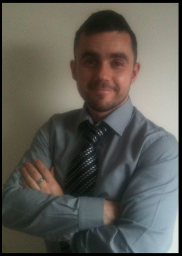

Ross Kelly
Curriculum Vitae - Education Summary - Work Experience - Twitter Feed - Projects

Meet Ross Kelly..
About Me
Im in the last stage of my 3 year degree in IT. I am a student in the College of Computer Training and
I have been the class President for the last 3 years. Ive passed all exams at the first attempt and handed all assignments up before the deadline.
I am an Enthusiastic and energetic team player with drive and determination to succeed, I am seeking a substantial work challenge in the IT Sector, Hopefully in web design or network security.
I have gained a significant amount of work experience over the past 10 years in a variety of different environments.
Basic Information
Name: Ross Kelly
Age: 27
D.O.B: 18-Nov-1985
Gender: Male
Marital Status: Single
Health: Excellent
Hobbies and Interests
My Hobbies include playing football for Skerries Bohs FC in the AUL Saturday Premier League. We are currently top of the table with only a few matches to go. I am an avid boxing and Mixed Martial Arts fan, I have trained in both boxing and MMA but have recently stopped both to focus on playing football. I enjoy socializing with friends, going to music gigs and festivals around the country. I have also spent time travelling around Australia, Indonesia, Malaysia, Asia and America in Recent years